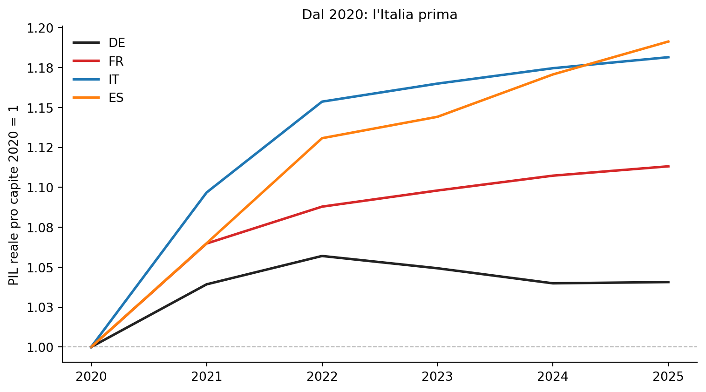
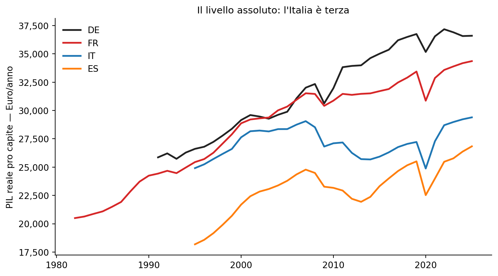
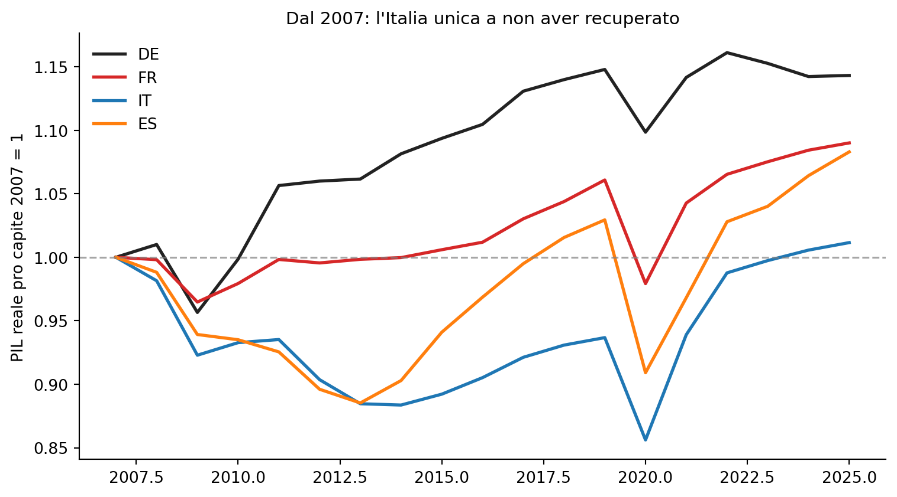
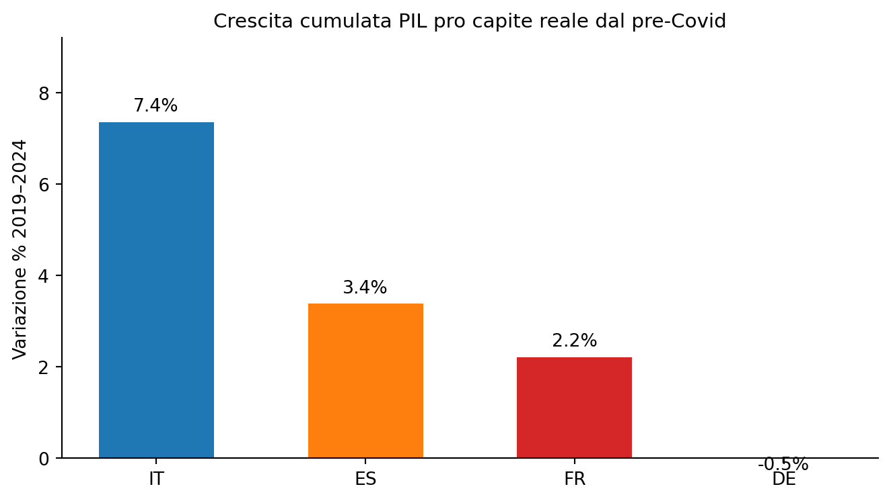
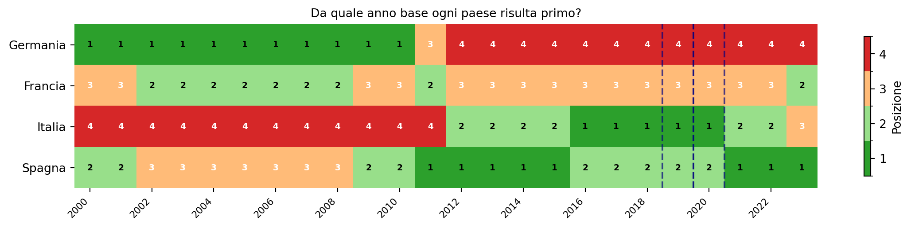

Figura 1: PIL reale pro capite — indice 2020 = 1 (prezzi concatenati 2010)
Analisi comparata DE, FR, IT, ES — Dati Eurostat
Paolo Volterra ![]()
Un post circolato sui social mostra che l’Italia ha registrato la crescita più elevata del PIL pro capite reale tra i quattro grandi d’Europa dal 2020. Il dato è corretto, ma dipende interamente dall’anno scelto come punto di partenza. L’analisi con dati Eurostat mostra tre fotografie radicalmente diverse dello stesso fenomeno: indicizzando dal 2020 l’Italia appare prima; in livello assoluto è terza da sempre; indicizzando dal 2007 risulta l’unico paese che ha appena recuperato il livello pre-crisi.
PIL, crescita, pro capite, Europa, Eurostat, data literacy, comunicazione statistica
Un post Telegram ha ripreso un’infografica della Fondazione Edison che mostra l’Italia come «maglia rosa» nella crescita cumulata del PIL pro capite rispetto ai livelli pre-Covid del 2019: +9,1%, contro +7,9% della Spagna, +4,8% della Francia e +7,5% del Regno Unito.
Il dato è tecnicamente corretto. Il «trucco» sta nell’anno scelto come punto di partenza. Possiamo raccontare storie molto diverse — e altrettanto vere — semplicemente spostando l’origine della serie storica.
Le tre figure che seguono mostrano la stessa variabile — il PIL reale pro capite di Germania, Francia, Italia e Spagna — con tre scelte diverse di anno base.
Indicizzando al 2020 (= 1), l’Italia mostra la crescita più elevata tra i quattro paesi: circa +17% cumulato al 2024. La Spagna segue, poi la Francia; la Germania si è praticamente fermata.

Figura 1: PIL reale pro capite — indice 2020 = 1 (prezzi concatenati 2010)
Guardando l’intera serie storica in livello (EUR per abitante, a prezzi 2010), il quadro cambia completamente. La Germania è sempre stata la più ricca tra i quattro; l’Italia si colloca terza, sopra la Spagna ma con un divario significativo da Francia e Germania. La crescita post-2020 — pur reale — non ha modificato le posizioni relative di lungo periodo.

Figura 2: PIL reale pro capite — livello in EUR/abitante (prezzi concatenati 2010, serie completa)
| geo_code | Germania | Francia | Italia | Spagna |
|---|---|---|---|---|
| Anno | ||||
| 2000 | 29,156 € | 28,869 € | 27,633 € | 21,689 € |
| 2007 | 32,017 € | 31,521 € | 29,059 € | 24,780 € |
| 2019 | 36,752 € | 33,440 € | 27,221 € | 25,510 € |
| 2024 | 36,573 € | 34,180 € | 29,223 € | 26,372 € |
Tabella 1: PIL reale pro capite — livello in EUR/abitante (prezzi concatenati 2010)
Se indicizzassimo dal 2007 — l’anno prima della crisi finanziaria globale — la lettura cambia ancora una volta. Tutti i paesi scendono sotto 1 durante la doppia recessione (2008–2009 e 2011–2013), ma Germania e Francia recuperano e superano i livelli pre-crisi già intorno al 2014–2015. L’Italia, al 2024, si trova a malapena ai livelli del 2007: è l’unico grande paese europeo che, in termini reali pro capite, non ha ancora superato il livello di diciassette anni fa.

Figura 3: PIL reale pro capite — indice 2007 = 1 (la linea tratteggiata indica il livello pre-crisi)
Questa è la fotografia che ha generato la discussione: la crescita cumulata dal 2019 (pre-Covid) al 2024. L’Italia registra il +9,1% più alto tra i quattro paesi, ma si tratta di un recupero parziale di un gap accumulato nel decennio precedente.

Figura 4: Crescita cumulata del PIL reale pro capite dal pre-Covid (2019–2024, %)
Tre serie storiche, tre narrazioni diverse — tutte basate sugli stessi dati.
La crescita post-2020 dell’Italia è reale, ma va contestualizzata:
La lezione è metodologica: ogni volta che si vede un grafico che mostra un primato o un’inferiorità, vale la pena chiedersi da quando parte la serie e in quale unità. I dati non mentono, ma la scelta di come presentarli può costruire narrazioni opposte.

Figura 5: Robustness check: posizione nel ranking PIL pro capite reale per anno base — crescita cumulata al 2024 (1° = verde, 4° = rosso)
Trasparenza sull’uso dell’intelligenza artificiale
L’uso di strumenti di intelligenza artificiale generativa è dichiarato esplicitamente in quanto parte del processo di lavoro seguito nella redazione del presente documento. Tali strumenti sono stati impiegati a supporto della lettura, della sintesi, della riorganizzazione argomentativa e della revisione testuale, sempre nell’ambito di un processo pienamente controllato dall’autore.
La responsabilità per le fonti utilizzate, le analisi condotte, le verifiche effettuate, le interpretazioni proposte e le conclusioni formulate resta interamente in capo all’autore.
L’intelligenza artificiale è stata utilizzata come ambiente di supporto cognitivo ed editoriale, non come fonte primaria, autore autonomo o sostituto del giudizio critico.